import {makeMesh, dirichlet, solve, mapPoint, shape, errors, exactCell,
makeCanvas, drawField, drawMesh, drawBoundary, drawNodes, drawElementNumbers,
drawSpy, csrEntries, csrDense, parseOverrides, parseExpr,
drawParentFunction, drawParentSquare, drawElementDetail, diverging, EDGES}
from "./fem2d.js"
import {texMatrix, texVector, num} from "./fem1d.js"Appendix G — 2D Poisson II: The Battery Cell, by Galerkin’s Method
The strong-form page set up heat flow in a battery cell as the two-dimensional model problem. This page solves it approximately, step by step, the same way 1D Poisson II solved the wall:
\[ \begin{aligned} &(\mathrm{S}) \;\Longleftrightarrow\; (\mathrm{W}) \;\xrightarrow{\;\text{finite-dimensional}\;}\; (\mathrm{G}) \;\xrightarrow{\;\text{basis functions}\;}\; \mathbf{K}\mathbf{d} = \mathbf{F} \\ &\qquad\qquad \mathbf{K}\mathbf{d} = \mathbf{F} \;\xleftarrow{\;\text{assembly}\;}\; \mathbf{k}^e,\; \mathbf{f}^e, \qquad \mathbf{K}\mathbf{d} = \mathbf{F} \;\xrightarrow{\;\text{solve}\;}\; u^h \end{aligned} \]
The steps are the same as in 1D, and so are most of the formulas, with \(\int_0^L\) replaced by \(\int_\Omega\). Two things are genuinely new, and they get the most space here: the basis functions now live on two-dimensional elements, and each element is placed in the plane by an isoparametric map whose Jacobian is a matrix. The bookkeeping (ID, IEN, LM) is unchanged, but its effect on the global matrix looks very different, so this page draws it out in full, including which rows and columns the Dirichlet nodes cut out.
The running example is the side-cooled cell:
| Where | Condition | |
|---|---|---|
| in \(\Omega = \,]0, W[\, \times \,]0, H[\) | \(-\kappa\left(u_{,11} + u_{,22}\right) = f\) | \(f\) = 25,000 W/m³, \(\kappa\) = 25 W/(m·K) |
| \(x_1 = 0\) (\(\Gamma_g\)) | \(u = g\) | \(g\) = 25 °C, the cooling plate |
| top, on the tabs | \(\kappa\,u_{,2} = h\) | \(h\) = 5000 W/m² on \(x_1 \in [0.015, 0.035]\) and \([0.065, 0.085]\) m |
| rest of \(\Gamma_h\) | \(\kappa\,\nabla u\cdot\underline{n} = 0\) | insulated |
\(W\) = 0.10 m and \(H\) = 0.20 m. At the bottom of the page, an explorer lets you choose the elements, the mesh, and the Dirichlet nodes, and see every array update.
G.1 The weak form
G.1.1 Two collections of functions
As in 1D, the weak form looks for \(u\) among trial functions and tests it against weighting functions, which differ only on \(\Gamma_g\):
\[ \mathcal{S} = \left\{\, u \in H^1(\Omega) \;\middle|\; u = g \text{ on } \Gamma_g \,\right\} \qquad\qquad \mathcal{V} = \left\{\, w \in H^1(\Omega) \;\middle|\; w = 0 \text{ on } \Gamma_g \,\right\} \]
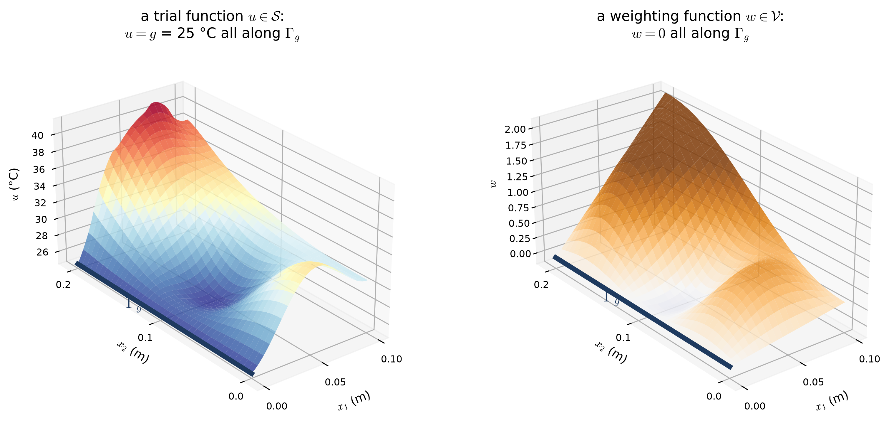
- \(H^1(\Omega)\) asks that \(u\) and its gradient be square-integrable: \(\int_\Omega \left(u^2 + u_{,i}u_{,i}\right) d\Omega < \infty\). For the piecewise polynomials used below, that comes down to one requirement: they must be continuous across element edges. A crease along an edge is allowed, but a discontinuity is not.
- As in 1D, the Dirichlet condition is built into \(\mathcal{S}\), and \(\mathcal{V}\) vanishes where \(\mathcal{S}\) is pinned.
G.1.2 Multiply, integrate, and integrate by parts
Multiply the differential equation by any \(w \in \mathcal{V}\) and integrate over the cross-section:
\[ \begin{aligned} 0 &= \int_\Omega w\left[\nabla\cdot\left(\kappa\nabla u\right) + f\right] d\Omega \\ \Longleftrightarrow\quad 0 &= \int_\Omega w\left[\left(\kappa\,u_{,i}\right)_{,i} + f\right] d\Omega \qquad \text{for every } w \in \mathcal{V} \end{aligned} \]
In 1D, integration by parts moved a derivative from \(u\) to \(w\). In 2D the same move takes two steps: the product rule, then the divergence theorem from the strong-form page.
\[ \begin{aligned} &\text{product rule:} & \nabla\cdot\left(w\,\kappa\nabla u\right) &= \nabla w\cdot\kappa\nabla u + w\,\nabla\cdot\left(\kappa\nabla u\right) \\ & & \Longleftrightarrow\quad \left(w\,\kappa\,u_{,i}\right)_{,i} &= w_{,i}\,\kappa\,u_{,i} + w\left(\kappa\,u_{,i}\right)_{,i} \\[6pt] &\text{divergence theorem:} & \int_\Omega \nabla\cdot\left(w\,\kappa\nabla u\right) d\Omega &= \int_\Gamma w\,\kappa\nabla u\cdot\underline{n}\;d\Gamma \\ & & \Longleftrightarrow\quad \int_\Omega \left(w\,\kappa\,u_{,i}\right)_{,i} d\Omega &= \int_\Gamma w\,\kappa\,u_{,i}\,n_i\;d\Gamma \end{aligned} \]
Together they give
\[ \int_\Omega \nabla w\cdot\kappa\nabla u\;d\Omega = \int_\Omega w\,f\;d\Omega + \int_{\Gamma_g} w\,\underbrace{\kappa\nabla u\cdot\underline{n}}_{\text{unknown}}\;d\Gamma + \int_{\Gamma_h} w\,\underbrace{\kappa\nabla u\cdot\underline{n}}_{=\;h}\;d\Gamma \]
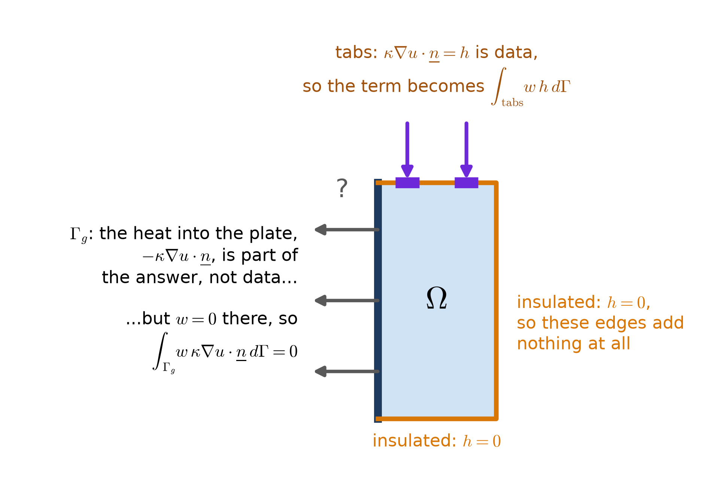
What remains is the weak form:
\[ (\mathrm{W}) \qquad \begin{aligned} &\text{Given } f,\ g,\ h,\ \kappa, \text{ find } u \in \mathcal{S} \text{ such that for all } w \in \mathcal{V}: \\[3pt] &\qquad \underbrace{\int_\Omega \nabla w\cdot\kappa\nabla u\;d\Omega}_{a(w,\,u)} = \underbrace{\int_\Omega w\,f\;d\Omega}_{(w,\,f)} + \underbrace{\int_{\Gamma_h} w\,h\;d\Gamma}_{(w,\,h)_\Gamma} \end{aligned} \]
or, in index notation and in Hughes’ compact form,
\[ \begin{aligned} \int_\Omega w_{,i}\,\kappa\,u_{,i}\;d\Omega &= \int_\Omega w\,f\;d\Omega + \int_{\Gamma_h} w\,h\;d\Gamma \\ a(w, u) &= (w, f) + (w, h)_\Gamma \qquad \forall\, w \in \mathcal{V} \end{aligned} \]
- The 1D weak form is the special case. With one coordinate, \(\int_\Omega\) becomes \(\int_0^L\), \(w_{,i}u_{,i}\) becomes \(w_{,x}u_{,x}\), and \(\int_{\Gamma_h} w\,h\,d\Gamma\) becomes the single term \(w(0)\,h\), because the boundary is a point.
- Units. Each term is W per meter of depth, times the units of \(w\): a weighted heat balance for the slice.
- The insulated edges are free. They carry a boundary condition, \(h = 0\), but it costs nothing: the natural condition is satisfied, in the weak sense, simply by not adding a term. For the cell, \((w, h)_\Gamma\) is an integral over the two tabs only.
- Only first derivatives. The strong form needed \(u_{,11} + u_{,22}\) at every point, which failed at the tab ends. The weak form needs only \(\nabla u\) to be square-integrable, and the log-singular gradient there is.
G.2 The Galerkin form
\((\mathrm{W})\) asks for a whole function. Galerkin’s method replaces \(\mathcal{S}\) and \(\mathcal{V}\) by finite-dimensional collections, \(\mathcal{S}^h\) and \(\mathcal{V}^h\), each spanned by a finite number of basis functions, so that finding \(u^h\) means finding a list of numbers.
G.2.1 Nodes, elements, and a mesh of the cell
Cut the cell into \(n_{el}\) quadrilateral elements, \(n_1\) across and \(n_2\) up. On each element, place a grid of \((p + 1) \times (p + 1)\) nodes: its four corners when \(p = 1\), and also its mid-sides and centre when \(p = 2\). Neighbouring elements share the nodes on their common edge, so the mesh has
\[ n_{np} = \left(p\,n_1 + 1\right)\left(p\,n_2 + 1\right) \quad \text{nodes}, \qquad n_{en} = (p + 1)^2 \quad \text{nodes per element} \]
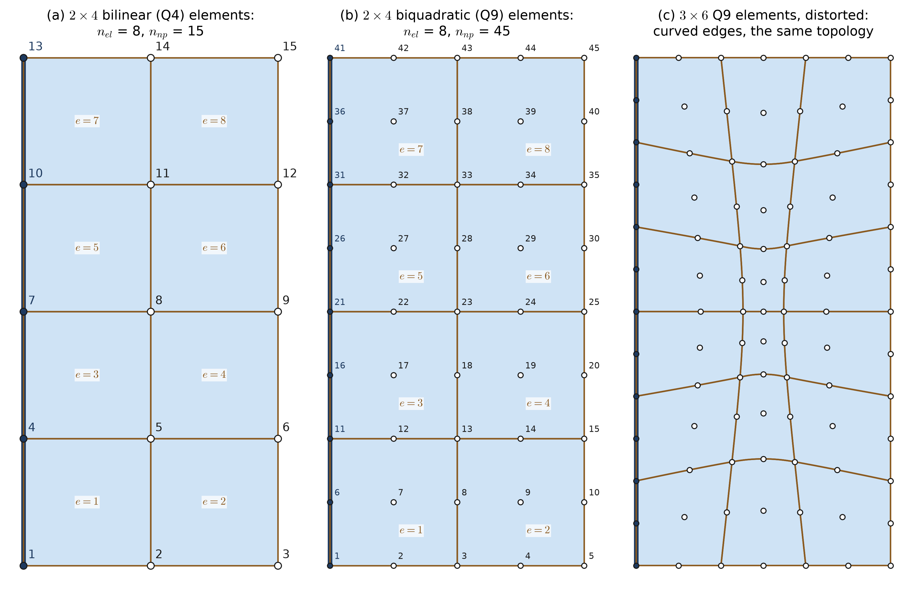
G.2.2 The Galerkin form, \((\mathrm{G})\)
Each node \(A\) gets a global basis function \(N_A\), built in the next section. Let \(\eta_g\) be the set of nodes on \(\Gamma_g\) and \(\eta - \eta_g\) the rest. Build the approximations from the basis:
\[ \begin{aligned} w^h &= \sum_{A \in \eta - \eta_g} c_A\,N_A \;\in \mathcal{V}^h \\ u^h &= v^h + g^h,\qquad v^h = \sum_{B \in \eta - \eta_g} d_B\,N_B \;\in \mathcal{V}^h,\qquad g^h = \sum_{B \in \eta_g} g_B\,N_B \end{aligned} \]
\(g^h\) carries the Dirichlet data: \(g_B = g(\underline{x}_B)\) at each node on \(\Gamma_g\). Every \(N_A\) with \(A \notin \eta_g\) vanishes on \(\Gamma_g\), so \(w^h\) and \(v^h\) do too. Substituting into \((\mathrm{W})\) and moving the known \(g^h\) to the right gives
\[ (\mathrm{G}) \qquad a(w^h, v^h) = (w^h, f) + (w^h, h)_\Gamma - a(w^h, g^h) \qquad \forall\, w^h \in \mathcal{V}^h \]
G.2.3 What the Galerkin step gives up, and what it keeps
\((\mathrm{S}) \Leftrightarrow (\mathrm{W})\) is exact: no information is lost. The approximation happens here, and only here, when \(\mathcal{S}\) and \(\mathcal{V}\) are replaced by \(\mathcal{S}^h\) and \(\mathcal{V}^h\). (Two smaller approximations come later: \(g^h\) matches \(g\) only at the nodes when \(g\) varies along the edge, and the element integrals are done by quadrature.)
What the Galerkin step keeps is a precise sense in which \(u^h\) is the best choice. \((\mathrm{W})\) holds for every \(w \in \mathcal{V}\), so in particular for every \(w^h \in \mathcal{V}^h\). Subtracting \((\mathrm{G})\) from it leaves
\[ a\left(w^h,\; u - u^h\right) = \int_\Omega \nabla w^h\cdot\kappa\nabla\left(u - u^h\right) d\Omega = 0 \qquad \forall\, w^h \in \mathcal{V}^h \]
The error is orthogonal to every function the mesh can represent, measured with \(a(\cdot,\cdot)\) as the inner product. It follows (Figure G.4) that, among all the trial functions the mesh can build, \(u^h\) is the one closest to \(u\) in the energy norm:
\[ \begin{aligned} &\left\| u - u^h \right\|_E \;\le\; \left\| u - v \right\|_E \quad \text{for every } v \in \mathcal{S}^h, \\ &\text{where}\quad \left\|v\right\|_E^2 = a(v, v) = \int_\Omega \kappa\,\nabla v\cdot\nabla v\;d\Omega \end{aligned} \]
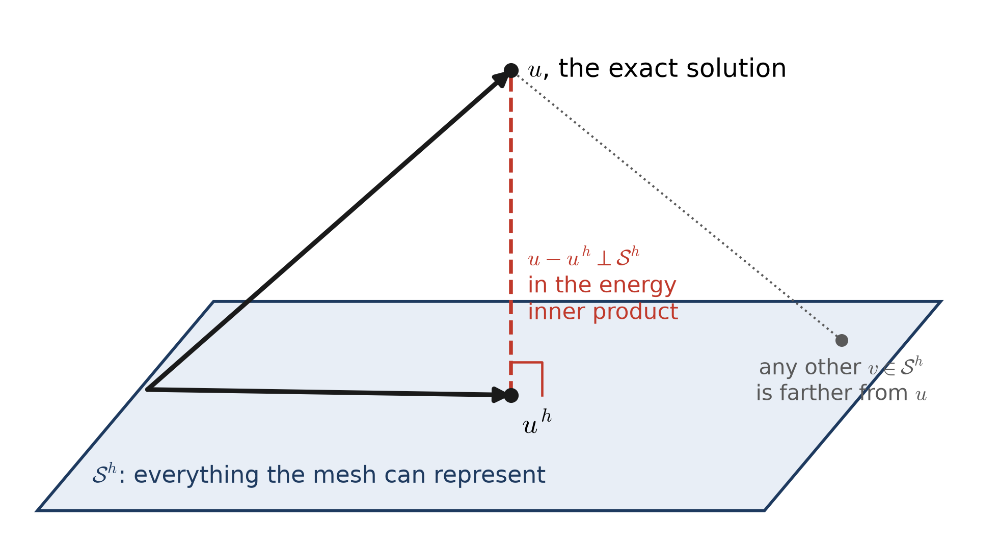
- \(\|v\|_E^2 = \int_\Omega \kappa\,|\nabla v|^2\,d\Omega\) weighs the gradient, and for heat conduction it is the rate at which a temperature field \(v\) dissipates heat. So Galerkin’s \(u^h\) is the member of \(\mathcal{S}^h\) whose heat flow is closest to the true one, in that energy-weighted sense.
- The quality of \(u^h\) is therefore settled entirely by how well \(\mathcal{S}^h\) can approximate \(u\). The rest of the method only has to find that best member. Choosing \(\mathcal{S}^h\) means choosing the basis functions, which is the next section.
G.3 Basis functions in two dimensions
G.3.1 What the basis has to do
Galerkin’s method works with any basis, but four properties make the finite element basis the standard choice:
- Conforming. \(\mathcal{S}^h\) must lie inside \(H^1(\Omega)\), so every \(N_A\) must be continuous across element edges.
- Local. \(N_A\) is non-zero only on the few elements that touch node \(A\). Then \(a(N_A, N_B) = 0\) unless nodes \(A\) and \(B\) share an element, and \(\mathbf{K}\) is sparse.
- Nodal. \(N_A(\underline{x}_B) = \delta_{AB}\), so the coefficient \(d_A\) is the temperature at node \(A\), and a Dirichlet value is imposed simply by fixing a nodal value.
- Complete. The basis reproduces every constant and every linear field exactly: \(\sum_A N_A = 1\) and \(\sum_A \underline{x}_A N_A = \underline{x}\). That is what lets \(u^h\) approach any smooth \(u\) as the elements shrink.
All four come from one construction: build a few standard functions on a single parent element, then copy them onto every element of the mesh.
G.3.2 The parent square and the tensor product
The parent element is the square \(\hat\Omega = [-1, 1]^2\), with coordinates \((\xi, \eta)\), also written \(\xi_1 = \xi\) and \(\xi_2 = \eta\). Its shape functions are products of the 1D Lagrange functions from 1D Poisson II, one factor for each direction:
\[ N_a(\xi, \eta) = N_{i(a)}(\xi)\;N_{j(a)}(\eta), \qquad\qquad N_a(\xi_b, \eta_b) = \delta_{ab} \]
For \(p = 1\), the 1D functions are \(\tfrac12(1 - \xi)\) and \(\tfrac12(1 + \xi)\), and the four products are the bilinear functions. Local nodes are numbered counter-clockwise from the lower-left corner, as in Class 10:
| \(a\) | 1 | 2 | 3 | 4 |
|---|---|---|---|---|
| \((\xi_a, \eta_a)\) | \((-1, -1)\) | \((1, -1)\) | \((1, 1)\) | \((-1, 1)\) |
| \(N_a(\xi, \eta)\) | \(\tfrac14(1 - \xi)(1 - \eta)\) | \(\tfrac14(1 + \xi)(1 - \eta)\) | \(\tfrac14(1 + \xi)(1 + \eta)\) | \(\tfrac14(1 - \xi)(1 + \eta)\) |
or, all at once, \(N_a = \tfrac14\left(1 + \xi_a\xi\right)\left(1 + \eta_a\eta\right)\).
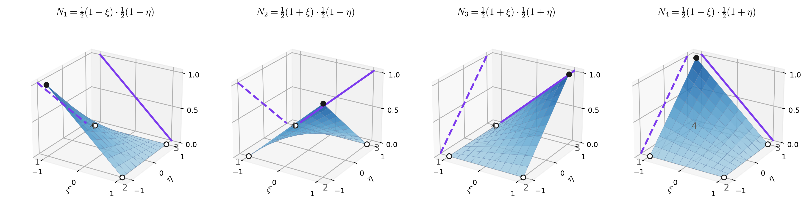
- Bilinear is not linear. \(N_3 = \tfrac14(1 + \xi + \eta + \xi\eta)\) contains the product \(\xi\eta\). Along any grid line it is linear, but along a diagonal it is quadratic, and the surface is a gently twisted saddle rather than a plane.
- Partition of unity. At every point, \(N_1 + N_2 + N_3 + N_4 = 1\). A uniform temperature is represented exactly, which is why every row of \(\mathbf{k}^e\) will sum to zero.
- Edges see only their own nodes. On the edge \(\eta = -1\), \(N_3 = N_4 = 0\), and \(N_1\) and \(N_2\) reduce to the 1D functions \(\tfrac12(1 \mp \xi)\). That single fact makes \(u^h\) continuous between elements, as shown below.
- The gradient in the parent coordinates is \(\nabla_\xi N_a = \left(N_{a,\xi},\; N_{a,\eta}\right) = \tfrac14\left(\xi_a(1 + \eta_a\eta),\; \eta_a(1 + \xi_a\xi)\right)\).
G.3.3 Biquadratic elements
For \(p = 2\) the 1D factors are the three quadratics \(\tfrac12\xi(\xi - 1)\), \(1 - \xi^2\), and \(\tfrac12\xi(\xi + 1)\), and their nine products need nine nodes: the corners, the mid-sides, and the centre. Hughes numbers the corners first, as for Q4, then the mid-sides counter-clockwise from the bottom, then the centre:
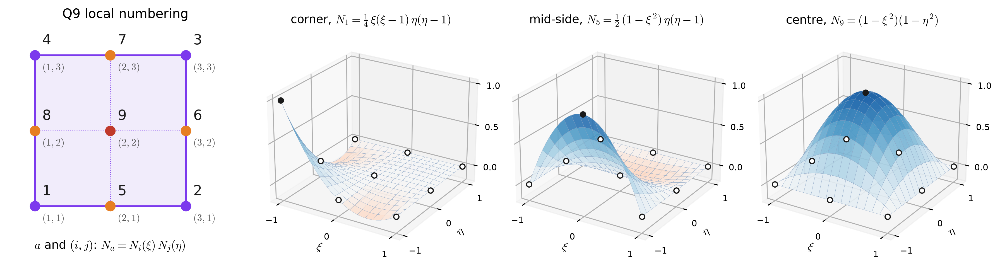
- The same four properties hold: \(N_a(\xi_b, \eta_b) = \delta_{ab}\), \(\sum_a N_a = 1\), and on each edge only the three nodes of that edge are non-zero, varying as the 1D quadratics.
- Q9 reproduces every polynomial of degree 2 in \(\xi\) and \(\eta\) (and a few of degree 3 and 4), so on a mesh of rectangles it represents the tab-free solution of the cell, a quadratic in \(x_1\), exactly.
- Dropping the centre node gives the 8-node serendipity element, which is not a tensor product. The tensor-product family used here extends to any degree \(p\) with \((p + 1)^2\) nodes.
G.3.4 From parent functions to global basis functions
Each element is a copy of the parent square (the next section says exactly how). Global node \(A\) is local node \(a\) of every element with \(\mathrm{IEN}(a, e) = A\), and on each of those elements the global function is the parent function carried over:
\[ N_A(\underline{x}) = \begin{cases} N_a\big(\xi(\underline{x})\big) & \text{on each element } e \text{ with } \mathrm{IEN}(a, e) = A \\[2pt] 0 & \text{on every other element} \end{cases} \]
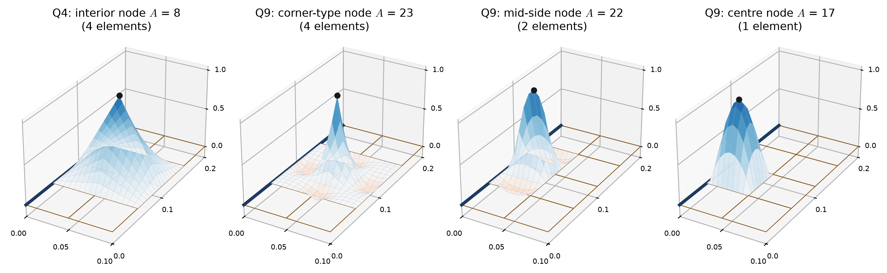
- Why \(u^h\) is continuous. Two neighbouring elements share an edge and the nodes on it. Along that edge, only the functions of those nodes are non-zero, and from either side each one is the same 1D Lagrange function of position along the edge. So \(u^h\) takes the same values from both sides: it is continuous, with a crease (a jump in slope) allowed across the edge. That is exactly what \(H^1\) needs.
- Why \(\mathbf{K}\) is sparse. The tent of node 8 overlaps only the tents of its eight neighbours. So row 8 of \(\mathbf{K}\) has at most nine non-zeros, however large the mesh. A Q9 corner-type node overlaps 25 functions; a centre node overlaps only the nine of its element.
Adding up the scaled tents gives the approximation:
\[ u^h(\underline{x}) = \sum_{A \in \eta - \eta_g} d_A\,N_A(\underline{x}) + \sum_{A \in \eta_g} g_A\,N_A(\underline{x}) \]
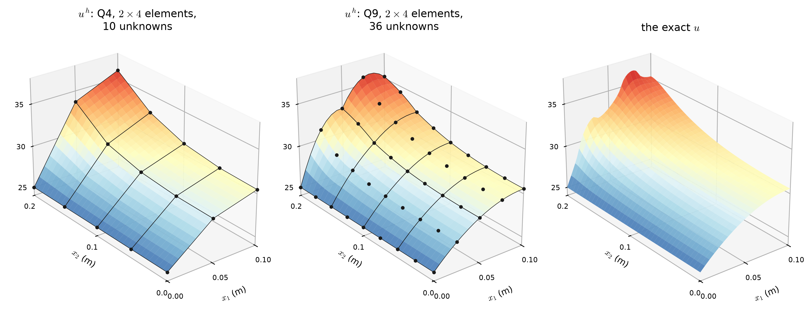
G.4 The isoparametric map
G.4.1 Placing an element in the plane
To carry the parent functions onto a physical element, the element itself is described with the same functions: its nodes’ coordinates are interpolated exactly the way temperatures are.
\[ \underline{x}(\xi, \eta) = \sum_{a=1}^{n_{en}} N_a(\xi, \eta)\;\underline{x}^e_a \quad\Longleftrightarrow\quad x_i(\xi, \eta) = \sum_{a=1}^{n_{en}} N_a(\xi, \eta)\;x^e_{ia} \]
That is what iso-parametric means: geometry and solution use the same parameters. For a rectangle aligned with the axes, this is just a stretch; for any other element, it is a genuine change of coordinates.
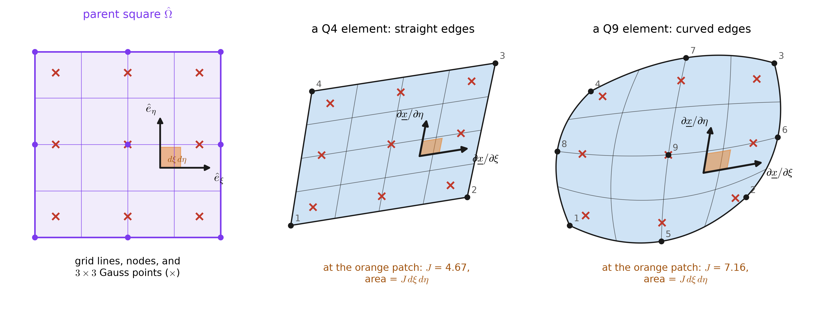
G.4.2 The Jacobian matrix and its determinant
How lengths and areas change under the map is recorded by its derivative, the Jacobian matrix (the deformation gradient of Class 9):
\[ \begin{aligned} DF = \frac{\partial \underline{x}}{\partial \underline{\xi}} &= \begin{bmatrix} \dfrac{\partial x_1}{\partial \xi} & \dfrac{\partial x_1}{\partial \eta} \\[8pt] \dfrac{\partial x_2}{\partial \xi} & \dfrac{\partial x_2}{\partial \eta} \end{bmatrix} = \sum_{a=1}^{n_{en}} \underline{x}^e_a \left(\nabla_\xi N_a\right)^T \\[4pt] \Longleftrightarrow\quad \frac{\partial x_i}{\partial \xi_j} &= \sum_{a=1}^{n_{en}} x^e_{ia}\,\frac{\partial N_a}{\partial \xi_j}, \qquad\qquad J = \det DF \end{aligned} \]
- The columns of \(DF\) are tangent vectors. Column 1, \(\partial\underline{x}/\partial\xi\), points along the image of a \(\xi\) grid line, and column 2 along the image of an \(\eta\) grid line (1).
- \(J\) is the area stretch. The tiny square \(d\xi\,d\eta\) becomes a parallelogram spanned by the two columns, with area \(J\,d\xi\,d\eta\). So \(d\Omega = J\,d\xi\,d\eta\), and every element integral can be done on the parent square: \(\int_{\Omega^e} (\cdot)\,d\Omega = \int_{-1}^{1}\!\int_{-1}^{1} (\cdot)\,J\,d\xi\,d\eta\).
- For an axis-aligned \(h_1 \times h_2\) rectangle the map is a pure stretch: \(DF = \mathrm{diag}\!\left(h_1/2,\; h_2/2\right)\) and \(J = h_1 h_2 / 4\), one quarter of the element’s area, because the parent square has area 4. That is the 2D version of \(x_{,\xi} = h^e/2\).
- \(J\) must stay positive. \(J > 0\) everywhere means the map is one-to-one and keeps the node ordering counter-clockwise. A badly shaped element folds over itself, and \(J\) changes sign (Figure G.10).
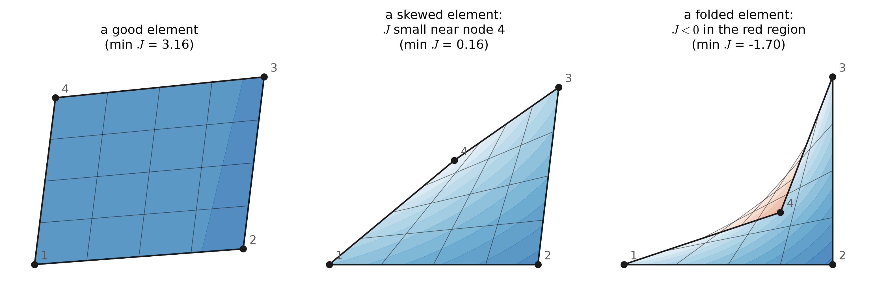
G.4.3 Derivatives: the chain rule
The weak form needs \(\nabla_{\!x} N_a\), derivatives with respect to the physical coordinates, but \(N_a\) is a known function of \((\xi, \eta)\). The chain rule connects the two:
\[ \frac{\partial N_a}{\partial x_i} = \frac{\partial N_a}{\partial \xi_j}\,\frac{\partial \xi_j}{\partial x_i} \quad\Longleftrightarrow\quad \nabla_{\!x} N_a = DF^{-T}\,\nabla_{\!\xi} N_a \] \[ DF^{-1} = \frac{1}{J}\begin{bmatrix} \dfrac{\partial x_2}{\partial \eta} & -\dfrac{\partial x_1}{\partial \eta} \\[8pt] -\dfrac{\partial x_2}{\partial \xi} & \dfrac{\partial x_1}{\partial \xi} \end{bmatrix} \]
\(\partial\xi_j/\partial x_i\) is the matrix \(DF^{-1}\), by the inverse function theorem, so the inverse map \(\underline{\xi}(\underline{x})\) is never needed. Everything is evaluated forward from \((\xi, \eta)\), at the quadrature points. For an axis-aligned rectangle the rule reduces to \(\nabla_{\!x} N_a = \left(\tfrac{2}{h_1}N_{a,\xi},\; \tfrac{2}{h_2}N_{a,\eta}\right)\), the 2D version of \(N_{a,x} = \tfrac{2}{h^e}N_{a,\xi}\).
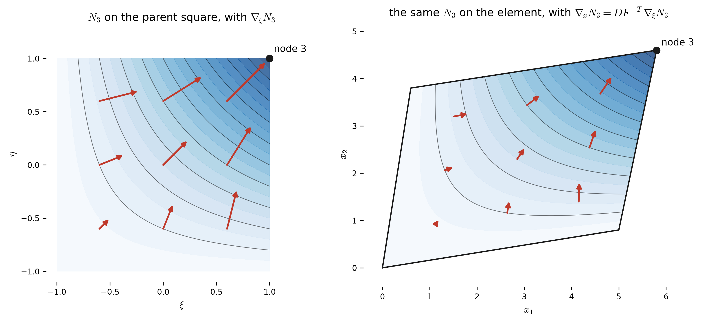
NoteOne point, worked by hand
Take the Q4 element of 1, with corners \(\underline{x}^e_1, \dots, \underline{x}^e_4\) = \((0, 0)\), \((5, 0.8)\), \((5.8, 4.6)\), \((0.6, 3.8)\), and the point \((\xi, \eta) = (0.35,\ -0.25)\).
\[ DF = \sum_a \underline{x}^e_a\left(\nabla_\xi N_a\right)^T = \begin{bmatrix}2.538 & 0.3675 \\ 0.4 & 1.9\end{bmatrix}, \qquad J = \det DF = 4.674 \]
For \(N_3 = \tfrac14(1 + \xi)(1 + \eta)\):
\[ \nabla_\xi N_3 = \tfrac14\begin{bmatrix} 1 + \eta \\ 1 + \xi \end{bmatrix} = \begin{bmatrix}0.1875 \\ 0.3375\end{bmatrix} \qquad\Longrightarrow\qquad \nabla_x N_3 = DF^{-T}\,\nabla_\xi N_3 = \begin{bmatrix}0.0473 \\ 0.1685\end{bmatrix} \]
Check: \(\nabla_x N_3 \cdot \partial\underline{x}/\partial\xi = 0.1875 = N_{3,\xi}\) and \(\nabla_x N_3 \cdot \partial\underline{x}/\partial\eta = 0.3375 = N_{3,\eta}\). Moving along a mapped grid line, \(N_3\) changes at exactly the rate it changes along the parent grid line.
G.5 From \((\mathrm{G})\) to \(\mathbf{K}\mathbf{d} = \mathbf{F}\)
The algebra is exactly the 1D algebra. Put the expansions into \((\mathrm{G})\) and pull the sums and coefficients out of the (bi)linear forms:
\[ \begin{aligned} \sum_{A \in \eta - \eta_g} c_A \Bigg[\; &\sum_{B \in \eta - \eta_g} a(N_A, N_B)\,d_B \\ &- (N_A, f) - (N_A, h)_\Gamma + \sum_{B \in \eta_g} a(N_A, N_B)\,g_B \Bigg] = 0 \end{aligned} \]
The \(c_A\) are arbitrary, so each bracket vanishes: one equation for each node not on \(\Gamma_g\). Number those equations with the ID array, \(P = \mathrm{ID}(A)\) and \(Q = \mathrm{ID}(B)\):
\[ \boxed{\;\mathbf{K}\,\mathbf{d} = \mathbf{F}\;} \qquad K_{PQ} = \int_\Omega \nabla N_A\cdot\kappa\nabla N_B\;d\Omega = \int_\Omega N_{A,i}\,\kappa\,N_{B,i}\;d\Omega \] \[ F_P = \int_\Omega N_A\,f\;d\Omega + \int_{\Gamma_h} N_A\,h\;d\Gamma - \sum_{B \in \eta_g} \left(\int_\Omega N_{A,i}\,\kappa\,N_{B,i}\;d\Omega\right) g_B \]
- Units, per meter of depth: \(\mathbf{K}\) in W/(m·K), \(\mathbf{d}\) in °C, and \(\mathbf{F}\) in W/m. Each equation is a heat balance for the patch of elements around one node.
- Symmetric, because \(a(N_A, N_B) = a(N_B, N_A)\).
- Sparse. \(K_{PQ} = 0\) unless nodes \(A\) and \(B\) share an element (Figure G.7). A row has at most 9 non-zeros for Q4, and at most 25 for Q9.
- Positive definite, as long as \(\Gamma_g\) has some length: then the only \(\mathbf{d}\) with \(\mathbf{d}^T\mathbf{K}\mathbf{d} = a(v^h, v^h) = 0\) is zero. With every edge Neumann, a uniform temperature would give zero, and \(\mathbf{K}\) would be singular, which is the strong form’s “up to a constant” again.
- Banded, but the band is up to you. In 1D, \(\mathbf{K}\) came out tridiagonal (for \(p = 1\)) automatically. In 2D, how far the non-zeros sit from the diagonal depends on how the nodes are numbered (Figure G.15).
G.6 The element point of view
G.6.1 Element arrays
Every integral over \(\Omega\) is a sum over elements, and on element \(e\) only its own \(n_{en}\) functions are non-zero. So the work reduces to the small element arrays, in local numbering \(a, b = 1, \dots, n_{en}\):
\[ k^e_{ab} = \int_{\Omega^e} \nabla N_a\cdot\kappa\nabla N_b\;d\Omega \] \[ f^e_a = \underbrace{\int_{\Omega^e} N_a\,f\;d\Omega}_{\text{body}} + \underbrace{\int_{\Gamma^e_h} N_a\,h\;d\Gamma}_{\text{element sides on } \Gamma_h} - \underbrace{\sum_{b=1}^{n_{en}} k^e_{ab}\,g^e_b}_{\text{Dirichlet nodes}} \]
where \(g^e_b\) is the prescribed temperature if local node \(b\) is on \(\Gamma_g\), and zero otherwise.
G.6.2 On the parent square, by quadrature
With \(d\Omega = J\,d\xi\,d\eta\) and the chain rule, both area integrals move to the parent square, where a tensor-product Gauss rule evaluates them. The rule’s points are all pairs \((\tilde\xi_i, \tilde\eta_j)\) of 1D Gauss points, and its weights are the products \(W_l = w_i w_j\):
\[ \begin{aligned} k^e_{ab} &= \int_{-1}^{1}\!\!\int_{-1}^{1} \left(DF^{-T}\nabla_{\!\xi}N_a\right)\cdot\kappa\left(DF^{-T}\nabla_{\!\xi}N_b\right) J\;d\xi\,d\eta \\ &\approx \sum_{l=1}^{n_{int}} \left[\left(DF^{-T}\nabla_{\!\xi}N_a\right)\cdot\kappa\left(DF^{-T}\nabla_{\!\xi}N_b\right) J\right]_{\tilde{\underline{\xi}}_l} W_l \end{aligned} \] \[ f^e_{a,\text{body}} \;\approx\; \sum_{l=1}^{n_{int}} N_a(\tilde{\underline{\xi}}_l)\, f\big(\underline{x}(\tilde{\underline{\xi}}_l)\big)\,J(\tilde{\underline{\xi}}_l)\,W_l \]
- \(n_{int} = 2 \times 2\) points for Q4 and \(3 \times 3\) for Q9, the crosses in
- On rectangles with constant \(\kappa\), these rules are exact.
- On distorted elements, \(DF^{-1}\) turns the stiffness integrand into a rational function, and quadrature becomes one of the small approximations mentioned earlier. It is a good one: the error it adds shrinks as fast as the discretization error.
The whole computation of \(\mathbf{k}^e\) is one loop, over each of the elements.
G.6.3 The Neumann term: an integral along element sides
\(\int_{\Gamma^e_h} N_a\,h\,d\Gamma\) is needed only for element sides that lie on \(\Gamma_h\), and only where \(h \ne 0\): for the cell, the top sides of the top row of elements. Along such a side, the parent coordinate that runs along it plays the role of \(\xi\) in 1D, and the length stretch is the size of the corresponding column of \(DF\). On the top side, \(\eta = 1\):
\[ \int_{\Gamma^e_h} N_a\,h\;d\Gamma = \int_{-1}^{1} N_a(\xi, 1)\;h\big(\underline{x}(\xi, 1)\big)\; \left\|\frac{\partial\underline{x}}{\partial\xi}(\xi, 1)\right\| d\xi \]
Only the \(p + 1\) nodes on that side get anything, because every other \(N_a\) vanishes on it. For a straight side with evenly spaced nodes, \(\|\partial\underline{x}/\partial\xi\|\) is half the side’s length: the 1D Jacobian \(h^e/2\) again. Because \(h\) jumps at the tab ends, the integral is split there, so that no Gauss rule straddles a jump.
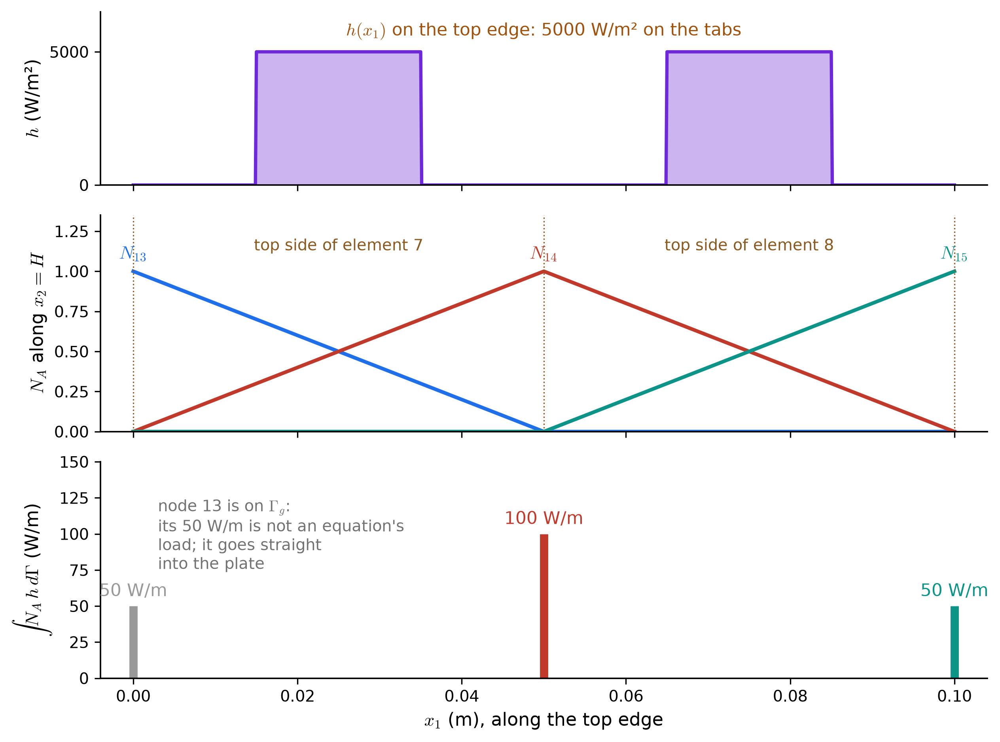
G.6.4 Closed forms for a rectangle
For an \(h_1 \times h_2\) rectangle with constant \(\kappa\) and \(f\), the Q4 arrays come out in closed form:
\[ \mathbf{k}^e = \frac{\kappa}{6}\left(\frac{h_2}{h_1}\begin{bmatrix} 2 & -2 & -1 & 1 \\ -2 & 2 & 1 & -1 \\ -1 & 1 & 2 & -2 \\ 1 & -1 & -2 & 2 \end{bmatrix} + \frac{h_1}{h_2}\begin{bmatrix} 2 & 1 & -1 & -2 \\ 1 & 2 & -2 & -1 \\ -1 & -2 & 2 & 1 \\ -2 & -1 & 1 & 2 \end{bmatrix}\right) \] \[ \text{a square, } h_1 = h_2: \qquad \mathbf{k}^e = \frac{\kappa}{6}\begin{bmatrix} 4 & -1 & -2 & -1 \\ -1 & 4 & -1 & -2 \\ -2 & -1 & 4 & -1 \\ -1 & -2 & -1 & 4 \end{bmatrix} \] \[ \text{Q4:}\quad \mathbf{f}^e_{\text{body}} = \frac{f\,A^e}{4}\begin{Bmatrix} 1 & 1 & 1 & 1 \end{Bmatrix}^T \] \[ \text{Q9:}\quad \mathbf{f}^e_{\text{body}} = \frac{f\,A^e}{36} \begin{Bmatrix} 1 & 1 & 1 & 1 & 4 & 4 & 4 & 4 & 16 \end{Bmatrix}^T \]
- No element size appears in the square element’s \(\mathbf{k}^e\), only \(\kappa\). In 1D, \(k^e \propto \kappa/h^e\): the gradient scales like \(1/h\), so the product of two gradients scales like \(1/h^2\), and the element’s length gives back one power of \(h\). In 2D its area gives back \(h^2\), so only the shape, \(h_2/h_1\), matters.
- Rows sum to zero, because a uniform temperature carries no heat.
- Node 1 is coupled most strongly to the opposite corner, node 3 (\(-2\)), not to its edge neighbours (\(-1\)). Heat between two nodes flows through the element’s interior, and the diagonal pair shares it all.
- The body load is not split evenly for Q9. Corners get 1/36 of the element’s heat, mid-sides 4/36, and the centre 16/36: the products of Simpson’s weights 1, 4, 1. (For the 8-node serendipity element the corner shares are even negative, \(-1/12\). A consistent load does not have to look intuitive.)
G.7 Assembly: the ID, IEN, and LM arrays
Hughes’ three integer arrays work exactly as in 1D:
| Array | Maps | Meaning |
|---|---|---|
| \(\mathrm{ID}(A)\) | global node \(\to\) equation | \(P\) if node \(A\) carries unknown number \(P\); \(0\) if \(A\) is on \(\Gamma_g\) |
| \(\mathrm{IEN}(a, e)\) | local node, element \(\to\) global node | local node \(a\) of element \(e\) is global node \(A\) |
| \(\mathrm{LM}(a, e)\) | local node, element \(\to\) equation | \(\mathrm{LM}(a, e) = \mathrm{ID}\big(\mathrm{IEN}(a, e)\big)\) |
and assembly adds \(k^e_{ab}\) into \(K_{PQ}\), with \(P = \mathrm{LM}(a, e)\) and \(Q = \mathrm{LM}(b, e)\), and \(f^e_a\) into \(F_P\), skipping every 0:
\[ \mathbf{K} = \mathop{\Large\mathsf{A}}_{e=1}^{n_{el}}\left(\mathbf{k}^e\right), \qquad \mathbf{F} = \mathop{\Large\mathsf{A}}_{e=1}^{n_{el}}\left(\mathbf{f}^e\right) \]
For the eight-element mesh of Figure G.3(a), with the cooled edge on \(\Gamma_g\):
| \(A\) | 1 | 2 | 3 | 4 | 5 | 6 | 7 | 8 | 9 | 10 | 11 | 12 | 13 | 14 | 15 |
|---|---|---|---|---|---|---|---|---|---|---|---|---|---|---|---|
| \(\mathrm{ID}(A)\) | 0 | 1 | 2 | 0 | 3 | 4 | 0 | 5 | 6 | 0 | 7 | 8 | 0 | 9 | 10 |
| \(a \backslash e\) | 1 | 2 | 3 | 4 | 5 | 6 | 7 | 8 |
|---|---|---|---|---|---|---|---|---|
| \(\mathrm{IEN}(1, e)\) | 1 | 2 | 4 | 5 | 7 | 8 | 10 | 11 |
| \(\mathrm{IEN}(2, e)\) | 2 | 3 | 5 | 6 | 8 | 9 | 11 | 12 |
| \(\mathrm{IEN}(3, e)\) | 5 | 6 | 8 | 9 | 11 | 12 | 14 | 15 |
| \(\mathrm{IEN}(4, e)\) | 4 | 5 | 7 | 8 | 10 | 11 | 13 | 14 |
| \(a \backslash e\) | 1 | 2 | 3 | 4 | 5 | 6 | 7 | 8 |
|---|---|---|---|---|---|---|---|---|
| \(\mathrm{LM}(1, e)\) | 0 | 1 | 0 | 3 | 0 | 5 | 0 | 7 |
| \(\mathrm{LM}(2, e)\) | 1 | 2 | 3 | 4 | 5 | 6 | 7 | 8 |
| \(\mathrm{LM}(3, e)\) | 3 | 4 | 5 | 6 | 7 | 8 | 9 | 10 |
| \(\mathrm{LM}(4, e)\) | 0 | 3 | 0 | 5 | 0 | 7 | 0 | 9 |
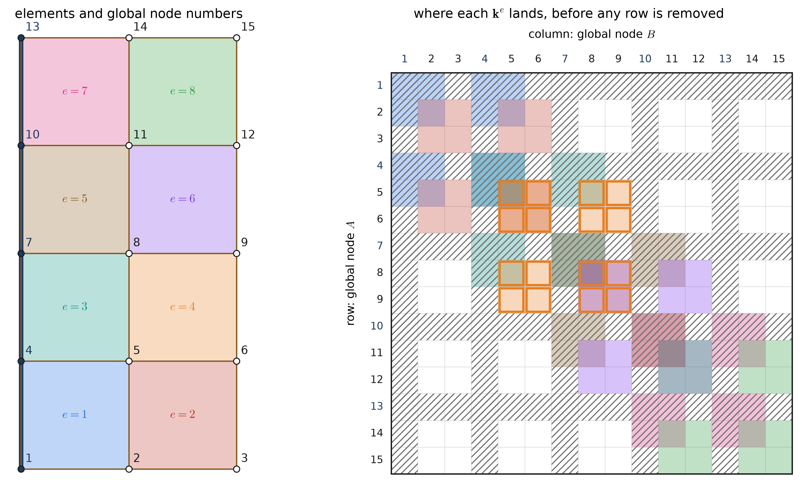
G.7.1 Cutting out the Dirichlet rows and columns
Hughes’ LM array removes the Dirichlet nodes while assembling. It is worth seeing what it removes. Assemble every node instead, Dirichlet ones included, into a full \(n_{np} \times n_{np}\) system, and list the free nodes first:
\[ \begin{bmatrix} \mathbf{K}_{ff} & \mathbf{K}_{fg} \\ \mathbf{K}_{gf} & \mathbf{K}_{gg} \end{bmatrix} \begin{Bmatrix} \mathbf{d} \\ \mathbf{g} \end{Bmatrix} = \begin{Bmatrix} \mathbf{F}_f \\ \mathbf{F}_g \end{Bmatrix} + \begin{Bmatrix} \mathbf{0} \\ \mathbf{R} \end{Bmatrix} \]
Here \(\mathbf{F}\) holds only the body and \(h\) terms, and \(\mathbf{R}\) is the heat that enters through each Dirichlet node, unknown in advance. It is the discrete version of the boundary term \(\int_{\Gamma_g} w\,\kappa\nabla u\cdot\underline{n}\,d\Gamma\) that \(w = 0\) removed from the weak form. The two block rows say different things:
\[ \underbrace{\mathbf{K}_{ff}\,\mathbf{d} = \mathbf{F}_f - \mathbf{K}_{fg}\,\mathbf{g}}_{\text{the system to solve: } \mathbf{K}\mathbf{d} = \mathbf{F}} \qquad\qquad \underbrace{\mathbf{R} = \mathbf{K}_{gf}\,\mathbf{d} + \mathbf{K}_{gg}\,\mathbf{g} - \mathbf{F}_g}_{\text{afterwards: the heat through } \Gamma_g} \]
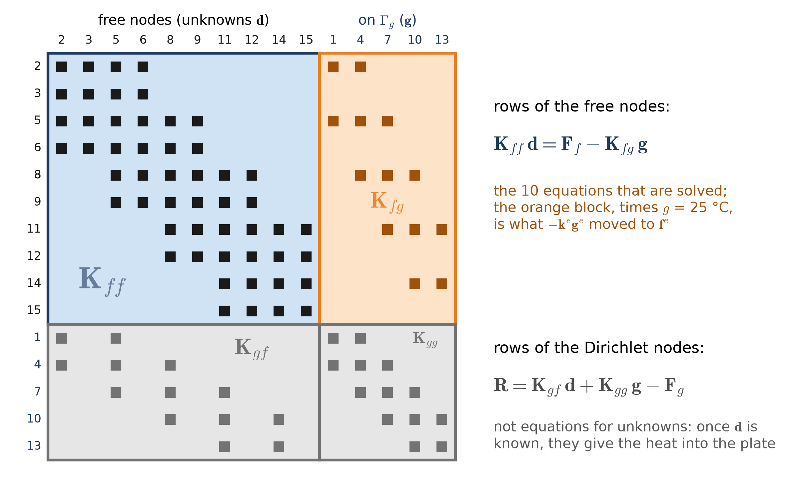
- Rows cut out: the Dirichlet nodes’ equations. A Dirichlet node has no unknown, so its row is not needed to find \(\mathbf{d}\). But it is not useless: it is the heat balance of that node, and it returns the boundary flux \(\mathbf{R}\) that the weak form never asked for.
- Columns cut out: the known temperatures. Each Dirichlet column multiplies a known \(g_B\), so it moves to the right-hand side. That is precisely the \(-\sum_b k^e_{ab}\,g^e_b\) term in \(\mathbf{f}^e\). An LM entry of 0 means “skip this row, and move this column”.
- Many codes do the same thing a different way: they keep the full \(n_{np} \times n_{np}\) matrix and overwrite each Dirichlet row with a 1 on the diagonal and \(g_B\) on the right. The resulting \(\mathbf{d}\) is the same. The explorer below shows both the full matrix and the cut-down one.
G.7.2 Numbering the nodes: the band
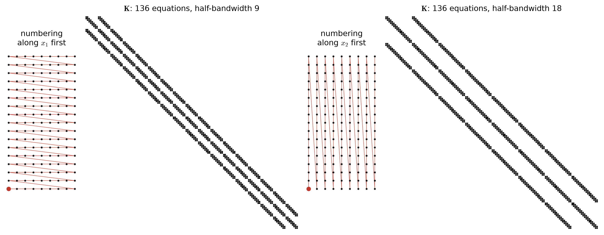
Neighbouring nodes in the other direction are a whole row of nodes apart in the numbering. Numbered along \(x_1\), rows are 9 nodes long and the half-bandwidth is 9. Numbered along \(x_2\), rows are 17 long and it grows to 18. A banded solver’s work grows with the square of the bandwidth, so the first numbering is about 4 times cheaper, for exactly the same \(\mathbf{d}\). Meshing programs renumber nodes for this reason; sparse solvers go further and reorder the unknowns themselves.
G.8 Worked example: eight bilinear elements
Take the mesh of Figure G.3(a): \(2 \times 4\) square Q4 elements, 5 cm on a side. The arrays are the ones tabulated above: 15 nodes, the five on the cooled edge fixed at \(g\) = 25 °C, and 10 unknowns.
Element arrays. Every element is the same square, so every element has the same \(\mathbf{k}^e\), and the same body load \(f A^e / 4 = 25{,}000 \times 0.0025 / 4 = 15.625\) W/m per node:
\[ \begin{aligned} \mathbf{k}^e &= \frac{25}{6}\begin{bmatrix} 4 & -1 & -2 & -1 \\ -1 & 4 & -1 & -2 \\ -2 & -1 & 4 & -1 \\ -1 & -2 & -1 & 4 \end{bmatrix} \\ &= \begin{bmatrix}16.67 & -4.167 & -8.333 & -4.167 \\ -4.167 & 16.67 & -4.167 & -8.333 \\ -8.333 & -4.167 & 16.67 & -4.167 \\ -4.167 & -8.333 & -4.167 & 16.67\end{bmatrix}\ \tfrac{\text{W}}{\text{m·K}} \qquad e = 1, \dots, 8 \end{aligned} \]
Three kinds of right-hand side occur. Elements 2, 4, and 6 touch neither the plate nor the tabs, so \(\mathbf{f}^e = \mathbf{f}^e_{\text{body}}\). Elements 1, 3, and 5 have local nodes 1 and 4 on \(\Gamma_g\), and element 7 also carries a tab on its top side:
\[ \mathbf{f}^1 = \begin{bmatrix}15.625 \\ 15.625 \\ 15.625 \\ 15.625\end{bmatrix} - \mathbf{k}^1 \underbrace{\begin{bmatrix}25 \\ 0 \\ 0 \\ 25\end{bmatrix}}_{\mathbf{g}^1} = \begin{bmatrix}-296.88 \\ 328.13 \\ 328.13 \\ -296.88\end{bmatrix}\ \text{W/m} \] \[ \mathbf{f}^7 = \begin{bmatrix}15.625 \\ 15.625 \\ 15.625 \\ 15.625\end{bmatrix} + \underbrace{\begin{bmatrix}0 \\ 0 \\ 50 \\ 50\end{bmatrix}}_{\text{tab}} - \mathbf{k}^7 \begin{bmatrix}25 \\ 0 \\ 0 \\ 25\end{bmatrix} = \begin{bmatrix}-296.87 \\ 328.12 \\ 378.12 \\ -246.87\end{bmatrix}\ \text{W/m} \] \[ \mathbf{f}^8 = \begin{bmatrix}15.625 \\ 15.625 \\ 15.625 \\ 15.625\end{bmatrix} + \underbrace{\begin{bmatrix}0 \\ 0 \\ 50 \\ 50\end{bmatrix}}_{\text{tab}} = \begin{bmatrix}15.625 \\ 15.625 \\ 65.625 \\ 65.625\end{bmatrix}\ \text{W/m} \]
Assembly. Entries of \(\mathbf{f}^1\) and \(\mathbf{f}^7\) with \(\mathrm{LM} = 0\) (local nodes 1 and 4) are dropped. The two survivors of \(\mathbf{f}^1\), \(15.625 + 312.5 = 328.125\) W/m, are the body load plus \(-\mathbf{k}^1\mathbf{g}^1\): the cold plate’s pull on nodes 2 and 5, moved to the right-hand side. Adding everything in through LM gives
\[ \mathbf{K} = \frac{25}{6}\,\begin{bmatrix}8 & -1 & -2 & -2 & \color{#bbbbbb}{0} & \color{#bbbbbb}{0} & \color{#bbbbbb}{0} & \color{#bbbbbb}{0} & \color{#bbbbbb}{0} & \color{#bbbbbb}{0} \\ -1 & 4 & -2 & -1 & \color{#bbbbbb}{0} & \color{#bbbbbb}{0} & \color{#bbbbbb}{0} & \color{#bbbbbb}{0} & \color{#bbbbbb}{0} & \color{#bbbbbb}{0} \\ -2 & -2 & 16 & -2 & -2 & -2 & \color{#bbbbbb}{0} & \color{#bbbbbb}{0} & \color{#bbbbbb}{0} & \color{#bbbbbb}{0} \\ -2 & -1 & -2 & 8 & -2 & -1 & \color{#bbbbbb}{0} & \color{#bbbbbb}{0} & \color{#bbbbbb}{0} & \color{#bbbbbb}{0} \\ \color{#bbbbbb}{0} & \color{#bbbbbb}{0} & -2 & -2 & 16 & -2 & -2 & -2 & \color{#bbbbbb}{0} & \color{#bbbbbb}{0} \\ \color{#bbbbbb}{0} & \color{#bbbbbb}{0} & -2 & -1 & -2 & 8 & -2 & -1 & \color{#bbbbbb}{0} & \color{#bbbbbb}{0} \\ \color{#bbbbbb}{0} & \color{#bbbbbb}{0} & \color{#bbbbbb}{0} & \color{#bbbbbb}{0} & -2 & -2 & 16 & -2 & -2 & -2 \\ \color{#bbbbbb}{0} & \color{#bbbbbb}{0} & \color{#bbbbbb}{0} & \color{#bbbbbb}{0} & -2 & -1 & -2 & 8 & -2 & -1 \\ \color{#bbbbbb}{0} & \color{#bbbbbb}{0} & \color{#bbbbbb}{0} & \color{#bbbbbb}{0} & \color{#bbbbbb}{0} & \color{#bbbbbb}{0} & -2 & -2 & 8 & -1 \\ \color{#bbbbbb}{0} & \color{#bbbbbb}{0} & \color{#bbbbbb}{0} & \color{#bbbbbb}{0} & \color{#bbbbbb}{0} & \color{#bbbbbb}{0} & -2 & -1 & -1 & 4\end{bmatrix}\ \tfrac{\text{W}}{\text{m·K}} \] \[ \mathbf{F} = \begin{bmatrix}343.75 \\ 15.625 \\ 687.5 \\ 31.25 \\ 687.5 \\ 31.25 \\ 687.5 \\ 31.25 \\ 443.75 \\ 65.625\end{bmatrix}\ \text{W/m} \] \[ \mathbf{d} = \begin{bmatrix}29.082 \\ 30.47 \\ 29.203 \\ 30.641 \\ 29.655 \\ 31.277 \\ 30.746 \\ 32.869 \\ 33.711 \\ 35.955\end{bmatrix}\ {}^\circ\text{C} \qquad\text{at nodes}\qquad \begin{Bmatrix} 2 & 3 & 5 & 6 & 8 & 9 & 11 & 12 & 14 & 15 \end{Bmatrix} \]
- Read the diagonal. In units of \(\kappa/6\), each element that touches a node adds 4 to that node’s diagonal entry. So the diagonal is 16 for a node shared by four elements, 8 for a node on an outer edge, and 4 for the corner nodes 3 and 15.
- Read the rows. A row of the full matrix sums to zero, because a uniform temperature carries no heat. Rows 1, 3, 5, 7, and 9 here do not: they belong to nodes next to the cooled edge, and the columns cut out of them moved to \(\mathbf{F}\) as the pull of the 25 °C plate.
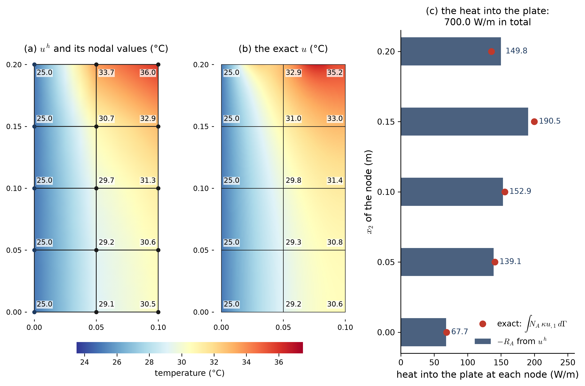
Every line of the Galerkin form can be checked on the result:
- The nodal values are not exact. They miss by up to 0.76 °C (at node 14). In 1D, linear elements with constant \(\kappa\) were exact at the nodes. That was a special property of one dimension, and it does not survive into 2D.
- The Dirichlet condition holds exactly. Every node on the cooled edge is at 25 °C, because it was built into \(\mathcal{S}^h\).
- The Neumann condition holds only on average. The top edge’s flux is built into \(\mathbf{F}\), but along the top side of element 8, \(\kappa\,u^h_{,2}\) runs only from 1482 to 1543 W/m², nothing like 5000 on the tab and 0 beside it. One bilinear element cannot represent a flux that switches on and off inside it.
- Energy is conserved exactly. The cut-out rows give the heat through each node of the plate, in panel (c), and it adds up to 700.000 W/m: the 500 W/m made plus the 200 W/m from the tabs. This holds on any mesh, however coarse, because the basis functions add up to 1. Take \(w^h = \sum_A N_A = 1\) in the weak form, including the Dirichlet nodes, and it reads “heat in = heat out”.
- The distribution is approximate. The node-by-node heat in (c) matches the exact weighted flux to within 11%, with the largest share at the top, where the tab heat arrives.
G.9 How the error shrinks
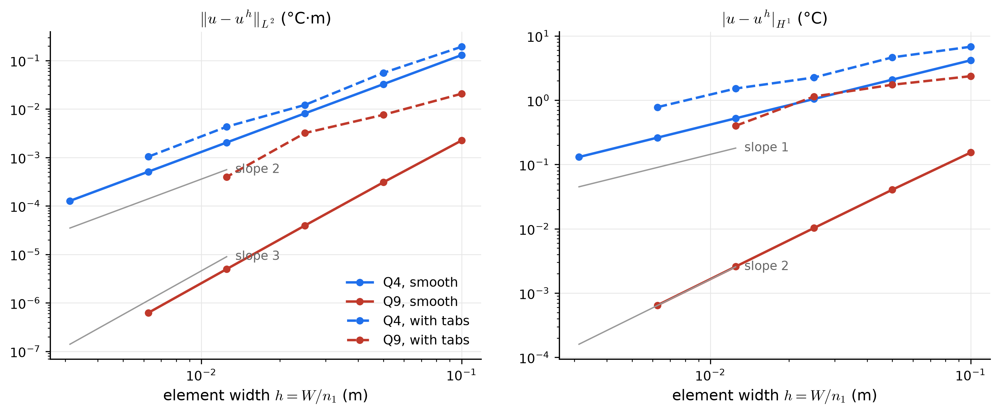
\[ \begin{aligned} \|u - u^h\|_{L^2} &= \left(\int_\Omega \left(u - u^h\right)^2 d\Omega\right)^{1/2} \le C\,h^{p+1} \\ |u - u^h|_{H^1} &= \left(\int_\Omega \left|\nabla u - \nabla u^h\right|^2 d\Omega\right)^{1/2} \le C\,h^{p} \end{aligned} \]
- For a smooth solution, the 1D rates carry over. The last halving of the mesh gives slopes 2.00 and 1.00 for Q4, and 3.00 and 2.00 for Q9: \(h^{p+1}\) for the temperature, \(h^p\) for its gradient and so for the heat flux.
- With the tabs, both element types slow down. The flux jumps from 0 to 5000 W/m² at the ends of each tab, and there \(\nabla u\) is unbounded (the \(\ln r\) of the strong-form page). No polynomial captures that well, so a higher degree buys little. The measured slopes wander, depending on where the tab ends fall inside the elements, and stay near first order in \(H^1\) for both. What helps is small elements at the tab ends, not higher degree everywhere. That is the argument for adaptive meshes.
- The error estimates are stated in terms of \(h\), but they are really about how well \(\mathcal{S}^h\) can approximate \(u\). That is the best-approximation property of Figure G.4 at work.
NoteHughes’ notation and the class notation
| Hughes (this appendix) | Class notes | |
|---|---|---|
| nodes \(A = 1, \dots, n_{np}\); local \(a = 1, \dots, n_{en}\) | \(A = 0, \dots\); \(a = 0, 1, 2, 3\) | 1-based vs 0-based (code) counting; the same counter-clockwise order |
| \(\partial\underline{x}/\partial\underline{\xi}\) and \(j = \det(\partial\underline{x}/\partial\underline{\xi})\) | \(DF\) and \(J\) | the Jacobian matrix and its determinant (used on this page) |
| \(\tilde{\underline{\xi}}_l\), \(W_l\), \(n_{int}\) | \(\xi_g\), \(w_g\), \(n_{quad}\) | quadrature points and weights |
| \(\mathbf{k}^e = [k^e_{ab}]\), \(\mathbf{f}^e = \{f^e_a\}\) | \(K^e_{ab}\), \(F^e_a\) | element arrays |
| \(\mathrm{IEN}(a, e)\), \(\mathrm{LM}(a, e)\) | IEN | the class uses IEN and skips \(\Gamma_g\) nodes directly |
G.10 Explore the Galerkin method
Build a mesh of the cell, choose the data, and decide which nodes are Dirichlet. Then look through the tabs. Solution shows \(u^h\) and its heat balance. Basis functions shows any global \(N_A\) and the parent functions of the highlighted element. Mapping takes one element through the isoparametric map, Gauss point by Gauss point. Matrices shows the ID, IEN, and LM arrays, the element arrays, the full assembled matrix with the rows and columns that the Dirichlet nodes cut out, and the system that is actually solved. Error compares \(u^h\) with the exact solution, when there is one.
The mesh
The data
The Dirichlet nodes, \(\Gamma_g\). Tick the edges held at a known temperature and give each one its \(g(x, y)\) in °C, with \(x = x_1\) and \(y = x_2\) in meters. Plain numbers work, and so do expressions such as 25 + 3*y/0.2 or 25 + 5*sin(PI*y/0.2). Then fix or free individual nodes by number, for example 8 = 45, 13 = free. Every fixed node gets \(\mathrm{ID}(A) = 0\), and its row and column are cut out of the solve. A node freed from a Dirichlet edge sits on an insulated stretch of boundary.
Highlight
- Start with the defaults, the worked example. On Matrices, step the highlighted element through all eight: its red entries land in scattered rows and columns of \(\tilde{\mathbf{K}}\), and the blue rows and columns are the ones that disappear from \(\mathbf{K}\).
- Type
8 = 45into “Fix or free nodes”. Node 8 gets \(\mathrm{ID} = 0\), every later equation number drops by one, and its row and column move from \(\mathbf{K}\) to the blue set. The temperature field now has a hot spot pinned at node 8, and the heat table shows node 8 putting heat into the cell. - Tick a second Dirichlet edge, or untick them all: with no Dirichlet node, \(\mathbf{K}\) is singular.
- Switch to Q9 with \(1 \times 2\) elements. There are still few enough nodes to print every matrix, and each \(\mathbf{k}^e\) is now \(9 \times 9\).
- Turn up Distort the interior and open Mapping. \(DF\) is no longer diagonal, and \(J\) changes from Gauss point to Gauss point. Push the distortion far enough and some element folds.
- Refine to \(16 \times 32\) and switch the numbering between \(x_1\) first and \(x_2\) first. The band in the sparsity picture on Matrices doubles in width.